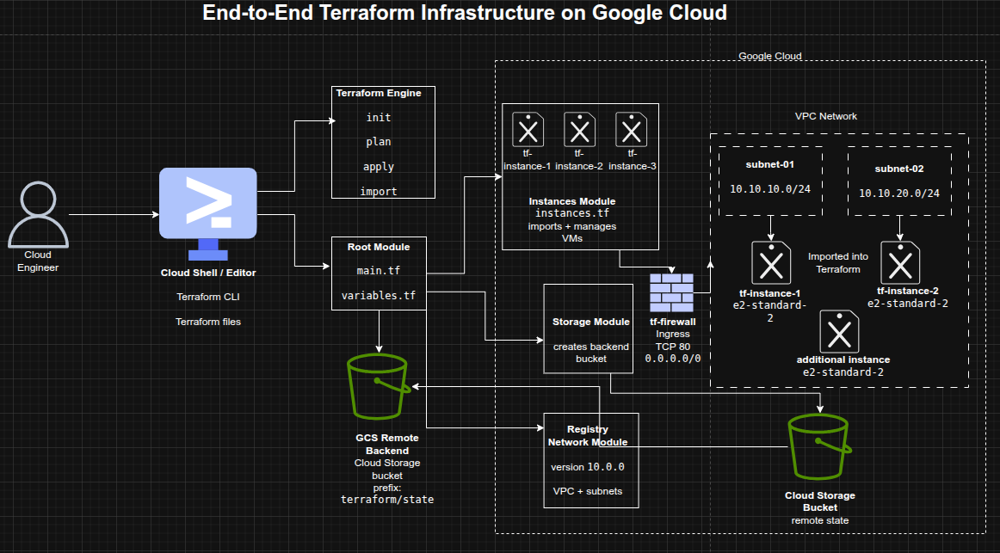

End-to-End Infrastructure Provisioning with Terraform on Google Cloud
End-to-End Infrastructure Provisioning with Terraform on Google Cloud
Timeline: December 2025
Role: Cloud Engineer
Skills: Terraform, Google Cloud, VPC Design, Compute Engine, Modules, Remote State, Terraform Import, Networking, Firewall Configuration, Infrastructure Lifecycle Management
Project Summary
This project involved designing and implementing a complete Google Cloud infrastructure using Terraform, including compute, networking, and security components. It combined infrastructure provisioning with the import of pre-existing resources, modular design, and remote state management to simulate a real-world cloud engineering scenario.
The implementation demonstrated how to bring unmanaged infrastructure under Infrastructure as Code control, build reusable Terraform modules, and manage the full lifecycle of cloud resources from creation to modification and destruction. :contentReference[oaicite:1]{index=1}
Objectives
- Import existing VM instances into Terraform
- Build reusable Terraform modules
- Configure a remote backend using Google Cloud Storage
- Use Terraform Registry modules for networking
- Provision VPC networks and subnetworks
- Deploy and manage Compute Engine instances
- Configure firewall rules for secure communication
- Perform infrastructure updates and controlled destruction
Architecture Overview
The architecture consists of:
- A Terraform root configuration orchestrating infrastructure
- A remote backend (GCS bucket) for centralized state management
- A custom instances module for Compute Engine VMs
- A custom storage module for backend infrastructure
- A Terraform Registry network module for VPC and subnets
- Three VM instances connected across subnets
- A firewall rule enabling HTTP connectivity
- Imported infrastructure brought under Terraform control

Key Components
1. Terraform Modular Design
- Root module orchestrates infrastructure
- Custom modules:
- instances module (VMs)
- storage module (backend bucket)
- Registry module:
- VPC network and subnets
2. Importing Existing Infrastructure
- Imported pre-existing VM instances into Terraform
- Created matching configuration manually
- Attached infrastructure to Terraform state
- Transitioned unmanaged resources into IaC control
3. Remote Backend Configuration
- Created a Cloud Storage bucket
- Configured Terraform backend using GCS
- Migrated state from local to remote backend
- Enabled centralized state management
4. Networking (VPC + Subnets)
- Created VPC using Terraform Registry module
- Configured:
- subnet-01 (10.10.10.0/24)
- subnet-02 (10.10.20.0/24)
- Connected instances to separate subnets
5. Compute Infrastructure
- Managed multiple VM instances:
- tf-instance-1
- tf-instance-2
- additional instance
- Standardized machine types
- Controlled updates via Terraform lifecycle
6. Firewall Configuration
- Created firewall rule:
- allows TCP port 80
- source range: 0.0.0.0/0
- Enabled communication between instances
7. Infrastructure Lifecycle Management
- Updated instance configurations
- Added and removed resources
- Destroyed infrastructure selectively
- Demonstrated full Terraform lifecycle:
- create → update → destroy
Design Decisions
- Used modules for reusability and separation of concerns
- Imported existing infrastructure instead of recreating
- Used remote backend for team-ready state management
- Leveraged Terraform Registry module to avoid reinventing networking
- Standardized instance configurations for consistency
- Applied minimal configuration during import to avoid unnecessary recreation
Results & Impact
- Successfully deployed and managed full cloud infrastructure using Terraform
- Demonstrated ability to:
- import existing infrastructure
- design modular IaC architecture
- manage remote state
- build production-style networking
- Reduced configuration complexity through modular design
- Showcased real-world Terraform workflows used in enterprise environments
Tools & Technologies Used
- Terraform – Infrastructure as Code
- Google Cloud Platform (GCP) – Cloud infrastructure
- Compute Engine – Virtual machines
- Cloud Storage – Remote state backend
- Terraform Registry Modules – Network provisioning
- Docker (conceptual import workflow) – Infrastructure import patterns
Outcome
This project demonstrates end-to-end Terraform capabilities, including modular infrastructure design, state management, networking, security, and lifecycle control, making it a strong representation of real-world cloud engineering and DevOps practices.